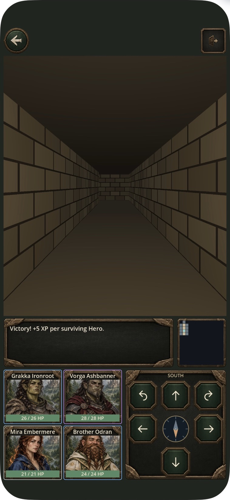
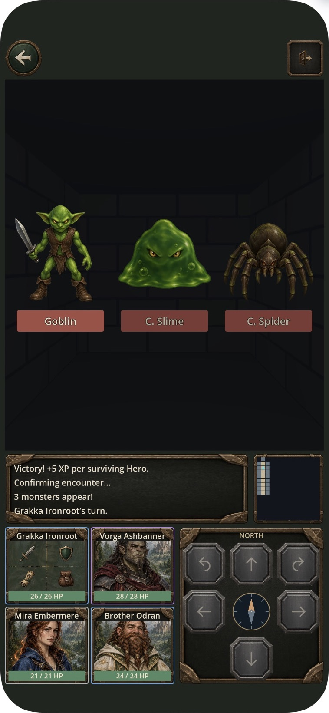

Victories can yield more.
After the whole enemy group is defeated, monsters can contribute Gold, equipment, both or neither. Living party members earn XP separately; account loot is not multiplied by party size.
Kingdom Builder / Heroes & Dungeons
Leave the army battlefield behind. Dungeons bring the adventure down to the scale of a corridor, a decision and the heroes at your side.
The Tavern
The Tavern brings together a collection of sixteen named heroes across four classes: Warrior, Mage, Rogue and Cleric. Each Die draws one hero, with Normal, Elite, Master and Legendary rarities distinguished by their portrait frames.
Build a party of up to four from your collection. Filter the roster, compare classes and move owned heroes between your party and bench. A first copy unlocks a character; matching duplicates support that hero's Rank rather than filling your party with identical copies.
The party shown here brings Grakka Ironroot and Vorga Ashbanner alongside Mira Embermere and Brother Odran: two Warriors, a Mage and a Cleric, each with individual attributes and equipment.
A dungeon run keeps the party it started with. Returning to the world preserves that expedition; it does not replace the saved lineup with another set of heroes.

First-person exploration
Stone Labyrinths and open-air Abandoned Ruins turn an outdoor discovery into a first-person 3D expedition. Move in steps, turn through the passages and uncover the minimap as you go. Your four heroes and a running adventure log stay close at hand.
The current Easy dungeons have one floor and an unlocked final chest. Find it to claim Gold and an equipment item, complete the expedition and return to the world. A completed wilderness entrance disappears for you, without removing another player's adventure.
Back preserves your position and keeps the run active. Confirmed Leave ends that run; later re-entry to the same instance starts at the entrance with explored map areas retained. Only one dungeon run can be active at a time.
The captures here come from the development Tavern entrance. These test runs now share wilderness XP, loot and recovery rules; the intended player route into dungeons remains discovery in the overworld.

Turn-based encounters
Groups of up to three monsters can interrupt exploration. Cave Slimes, Goblins and Cave Spiders have animated attacks, individual health bars and a place in the enemy formation. Enemy attacks play in sequence, while the log records what happened.
The acting hero's portrait exposes Attack, Defend, Spells and Items. Strength shapes physical damage, Dexterity affects accuracy and evasion, and Intelligence strengthens spells and healing. A strike can miss; choosing the next action matters.
Fire I and Heal I spend the caster's remaining charges, not a shared mana bar. Target selection and limited casts make spell use a decision that carries beyond a single turn.
Health persists between fights. Downed heroes earn no victory XP, and leaving with a downed hero or suffering a party wipe starts a 24-hour exhaustion period. Leveling up does not heal or revive them.
Items currently opens inventory inspection. Combat consumables and mid-battle equipment swaps are not enabled.

On the device
Watch a party action resolve and the surviving monsters take their turns. Their attacks are presented one after another, with health changes and the combat log keeping the encounter readable.
This silent clip is captured from the installed iPhone development build, not a cinematic or a simulated website interaction.
Open the dungeon clipYour heroes, developed
XP levels and Rank are separate paths. Living heroes earn XP when an encounter is won, progressing through five current levels. Each new level adds Stamina and a class-focused attribute; growth takes effect during the expedition without restoring lost health.
Rank also runs from one to five, using matching hero duplicates for a permanent class-attribute bonus. It is a deliberate upgrade, not another name for XP leveling.
Head, Chest, Gloves, Legs, Boots, Main hand and Off-hand equipment use class and slot rules. A two-handed weapon reserves the off-hand, and every piece is an individually owned item. Stat bonuses contribute alongside base attributes, level and Rank.
Weapons, armor and shields now share dedicated item artwork across Hero Details, Inventory and Marketplace. Quality, durability and base damage or defense are visible item properties; their deeper combat scaling, wear, repair and crafting remain unfinished.

A reason to venture further
After the whole enemy group is defeated, monsters can contribute Gold, equipment, both or neither. Living party members earn XP separately; account loot is not multiplied by party size.
The final chest currently awards 10 Gold and an equipment item, then completes the dungeon. Loot already earned from earlier victories stays yours even if you later leave or lose the run.
Still in the workshop
Multi-floor Medium and Hard dungeons, lesser and locked chests, equipment crafting and repair, expanded spellbooks, spell recharging and consumables remain in development. They are not presented as playable features here.
Screenshots and silent gameplay clips were captured on iPhone on November 13, 2026, including a development Tavern dungeon. They show the installed build, which may differ from newer local client changes. Art, interface labels and balance may change before release.